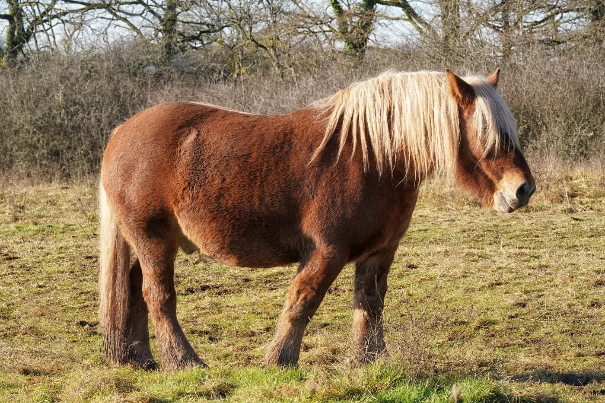

Trait du Nord
Spirit - 8 ans
Un cheval doux et affectueux qui apprécie les longues balades.
Un cheval doux et affectueux qui apprécie les longues balades.

Curieux et joueur, il adore découvrir de nouveaux environnements.

Calme et patient, il recherche un environnement paisible.

Énergique et sociable, il aime passer du temps avec les humains.

Très gentil et habitué au contact humain, il aime les moments de tendresse.